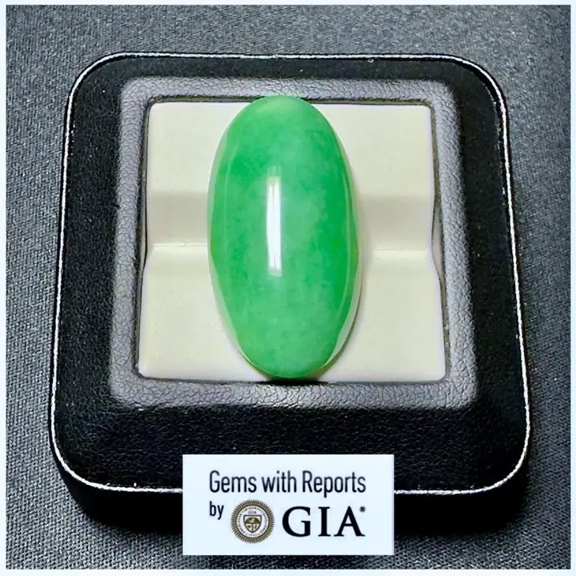
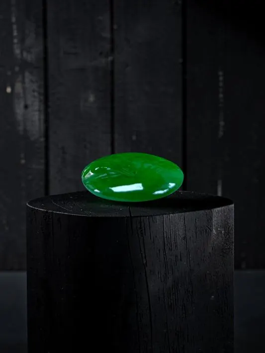

A貨、B貨、C貨：翡翠世界的紅綠燈
A、B、C 三個字母，是翡翠世界的紅綠燈——A 貨天然、B 貨美容、C 貨染色，看錯一個燈，錢就白花了。


核心定義
翡翠的 A/B/C 貨是華人市場的分類系統：A 貨＝未經人為處理的天然翡翠；B 貨＝經強酸漂洗（去除雜質）再注膠（填補裂隙）的翡翠；C 貨＝經人工染色的翡翠。B+C 貨則是既酸洗注膠又染色。「A 貨」三個字，是天然性的通行證。
為什麼要有 B/C 貨？因為部分翡翠種水差、裂紋多、顏色淡——酸洗可以「洗」掉雜質與裂紋（再用樹脂填補），染色可以「加」上綠色。處理後的翡翠外觀大改，但結構已被破壞、耐久度與價值大跌。
特徵與分類
| 類型 | 處理 | 鑑定特徵 |
|---|---|---|
| A 貨 | 無處理 | 天然結構、石紋自然 |
| B 貨 | 酸洗＋注膠 | 樹脂光澤、網狀裂隙、紫外螢光 |
| C 貨 | 染色 | 顏色沿裂隙滲入、不均 |
| B+C 貨 | 酸洗＋注膠＋染色 | 兩者特徵皆有 |
B 貨的破綻：樹脂的「蠟狀光澤」代替天然玻璃光、放大下可見網狀「酸蝕紋」、紫外燈下樹脂發藍白螢光；C 貨的破綻：顏色沿裂隙與顆粒邊界滲透（像毛細管染上去），自然光下色調「浮」而不「沉」。
科學原理
B 貨的工藝：強酸（如鹽酸）浸泡溶解裂隙中的雜質與鐵鏽——酸把翡翠「洗白」了，但同時溶解了晶粒間的膠結物，讓結構疏鬆；再用樹脂在高壓下充填，恢復透明度。這個過程本質上「掏空再補」——翡翠的天然結構已被破壞。
C 貨的工藝：加熱後把染料（如鉻鹽）壓入裂隙與晶粒間隙——顏色「滲」進去的，只存在於裂隙與表面，日久會褪色。實驗室可用光譜與顯微鏡分辨「天然鉻」與「染料鉻」。
鑑定與鑑別方法
- 十倍放大鏡看結構：B 貨有網狀酸蝕紋、樹脂填充
- 紫外燈：B 貨樹脂發螢光
- 看光澤：B 貨蠟狀、A 貨玻璃光
- 聽聲音：A 貨清脆、B 貨沉悶（結構疏鬆）
- 證書為王：權威實驗室標明 A/B/C 或處理狀態
市場行情與保養建議
行情鐵律：A 貨是翡翠市場的「天然通行證」，B/C 貨即使外觀再好，價格也僅為同級 A 貨的零頭——且證書必須標示處理。市場上「B 貨冒充 A 貨」是最大的騙局，旅遊區與直播間高發。
自保三步：看證書（權威機構標明處理狀態）、看價格（異常便宜即警覺）、看實物（放大鏡＋紫外燈快篩）。記住：A 貨的「玻璃光」與 B 貨的「蠟光」，是肉眼可學的第一課。
常見誤區
主體是翡翠，但已被人為破壞結構（B）或染色（C）——市場與法律上，處理翡翠必須標示，價值與天然 A 貨天差地遠。
部分天然翡翠（含樹脂拋光殘留、螢光礦物）也可能發螢光——紫外燈是「線索」不是「判決」，最終以實驗室為準。
冷知識
酸洗注膠技術在 1980 年代出現並迅速泛濫，1990 年代後實驗室檢測技術跟上，B 貨才無所遁形——翡翠市場的「科技攻防」史。
樹脂老化、酸蝕結構疏鬆後，B 貨會發黃、發乾、表面起紋——它的美是借來的，時間會討回去。
反直覺觀點
酸洗去雜＋樹脂填充讓 B 貨「又透又綠」——短期內外觀甚至勝過平庸 A 貨。但漂亮是化妝，時間一久便現原形。
染料不穩定，C 貨日久褪色——褪色的「翡翠」，鐵證如山地證明它染色過。時間是誠實的鑑定師。